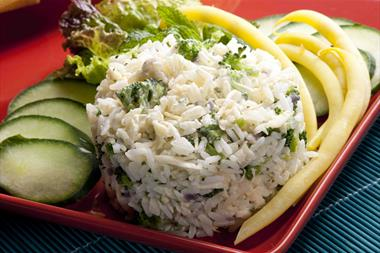
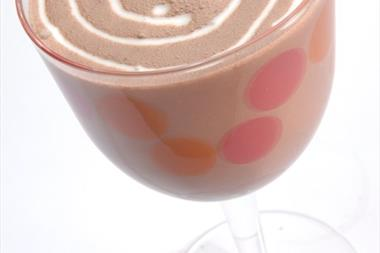

Arroz A La Crema Y Tomate
Arroz
Las verduras contienen agua, lo que ayuda a la digestión y a la saciedad durante las comidas principales.

Arroz Con Brócoli
Arroz
Los pimientos son una buena fuente de fibra, vitaminas y antioxidantes, son deliciosamente versátiles.

Batido De Chocolate
Batidos
El beber 8 vasos de líquido al día, incluyendo agua; te ayuda a mantener la correcta hidratación de tu cuerpo.
Camarones Thai
Camarones
Los camarones son fuentes de zinc, importante para el crecimiento.
Cacerola De Huevo
Caserola
La variedad es la clave para una dieta balanceada, la cantidad es otro componente esencial.